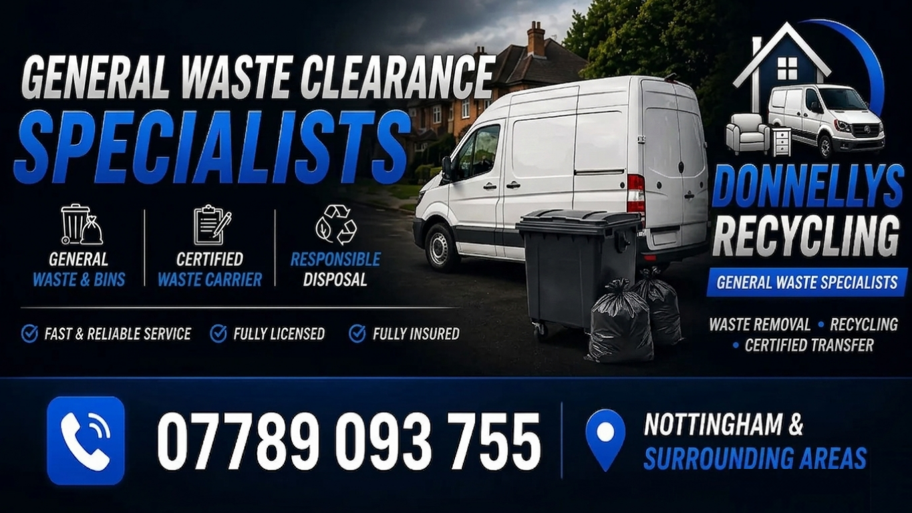

Fast, affordable waste clearance and rubbish removal across Nottingham. Same day / next day availability where possible. Licensed waste carrier CBDU491542.
Bagged rubbish, bulky waste and general clear-outs collected and disposed of legally.
Green waste, shed clear-outs, garage waste and mixed loads removed quickly.
We recycle wherever possible and use licensed disposal routes for the rest.
Send a quick message and we’ll get back to you ASAP.
We provide house clearance across Nottingham and surrounding areas including:
Nottingham postcodes covered: NG1, NG2, NG3, NG4, NG5, NG6, NG7, NG8, NG9, NG10, NG11, NG12, NG13, NG14, NG15, NG16.
We also provide house clearance and rubbish removal in nearby locations: